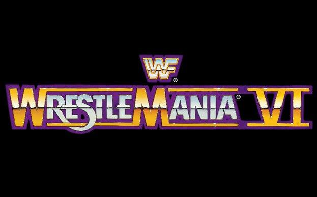
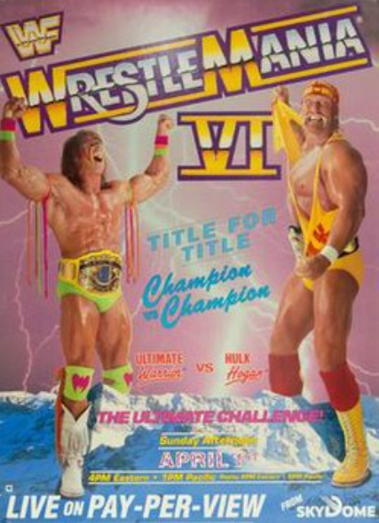
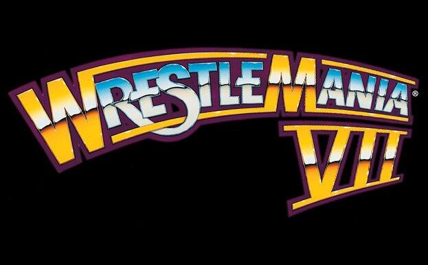
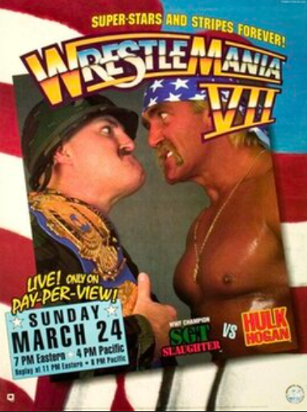

Wrestlemania 6

Wrestlemania 6 Facts
- The original main event was supposed to be Hulk Hogan VS Zeus but Hogan didn't want to lose to Zeus so Vince McMahon pivoted the main event to The Ultimate Warrior.
- For his match against Bad News Brown, Roddy Piper painted half of his body black in order to gain attraction but after the match, it took about 3 weeks for the paint to full come off after intensely scrubbing it.
- This Wrestlemania match was the last televised WWE match for Andre the Giant as after this, his health was starting to deteriorate really badly & it led to him getting multiple health complications & during the match, he was leaning on the ropes for 9 & a half minutes while his tag partner Haku did all of the work.
- On the replay of this event, one match was missing which would be between Bad News Brown & Roddy Piper because Roddy Piper painted his body half-black for the match & that led to the exclusion of the match due to fans thinking Piper was being racist & all the stuff he said in the promos didn't sit well with fans & people backstage.
- Mr. Perfect's secret streak came to an end at the event as he suffered his first televised singles loss where he was pinned by Brutus "The Barber" Beefcake.
Wrestlemania 6 Poster

Wrestlemania 6 Statistics
- Wrestlemania 6 would be the first edition to be held on April 1st to feature a babyface vs babyface main event but multiple other Wrestlemanias that would happen on April 1st would have the same thing happen such as Wrestlemania 6, 17, 23, & 28.
- Wrestlemania 6 holds the unfortunate record of having the most deceased wrestlers on one card as that number is at 15 out of the 36 & that's for any major WWE Pay-Per-View/Premium Live Event. Also, only 4 matches on the card feature only deceased wrestlers.
- This Wrestlemania was the first one to be held outside of the United States as it was held in Canada at the SkyDome.
- The gate revenue for the show was $3.49 million across 67,678 spectators that packed the SkyDome & at home was $20.2 million as 560,000 people bought the PPV at home.
- The attendance for Wrestlemania 6 set the largest attended event at the SkyDome with 67,678 fans attending the show.
- The shortest match of the night was 19 seconds as the Hart Foundation defeated The Bolsheviks. The longest was 22 minutes & 51 seconds as The Ultimate Warrior defeated Hulk Hogan to take home the WWE Intercontinental & the WWE Championship in the main event.
Wrestlemania 7 Logo

Wrestlemania 7 Facts
- Originally, Wrestlemania 7 was supposed to be held at the Los Angeles Memorial Coliseum with 100,000 fans but WWE claims that they switched venues because they had security over Sgt. Slaughter's character at the time as he was an Iraqi sympathizer but in reality, they changed to the Los Angeles Memorial Sports Arena because they had a huge box office disappointment only selling 16,000 tickets at the bigger venue.
- Randy Savage was already married to Miss Elizabeth since 1984 prior to their "reuniting" after Randy Savage's retirement match at the show but their real-life marriage was crumbling as they divorced a year later.
- Prior to his loss against The Ultimate Warrior, Randy Savage had planned a legitmate retirement beforehand. So, it wasn't just a storyline, it was a true retirement. But after The Ultimate Warrior was fired & Hogan had some controversies, Vince McMahon had Savage return prematurely to the ring.
- This event featured the start of The Undertaker's 21-0 consecutive win streak at Wrestlemania as he defeated Jimmy "Superfly" Snuka.
- This event was the final Wrestlemania appearance for Andre the Giant as he accompanied Big Boss Man at ringside for his match against Mr. Perfect. Also, Andre the Giant didn't do anything physical but still appeared so that fans can get one good look at him before he passed away in 1993.
Wrestlemania 7 Poster

Wrestlemania 7 Statistics
- The total attendance for the event was 16,158 fans